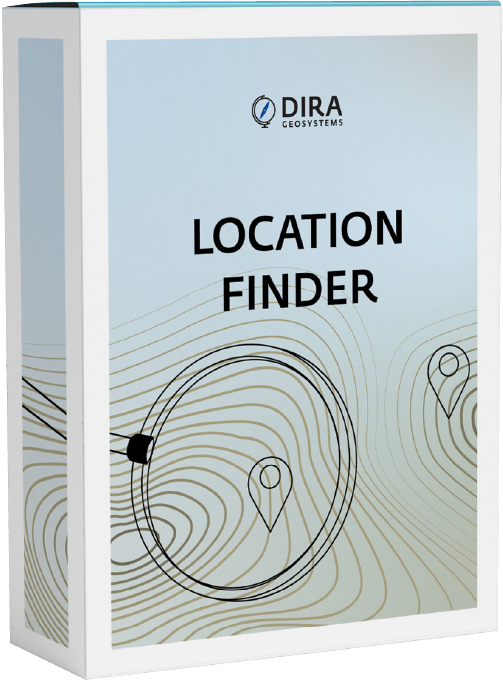

LocationFinder
LocationFinder
Erschliessen Sie Ihre Standortdaten mit unserer leistungsstarken Suchmaschine
LocationFinder ist eine interaktive Suchmaschine für Adress- und Ortsdaten, mit zahlreichen Konfigurationsmöglichkeiten zur Feinabstimmung des Sucherlebnisses für den Endbenutzer.
Unlock your location data with our powerful search engine
LocationFinder is an interactive search engine for address and place data. It provides plentiful configuration possibilities for fine-tuning the end user's search experience.
